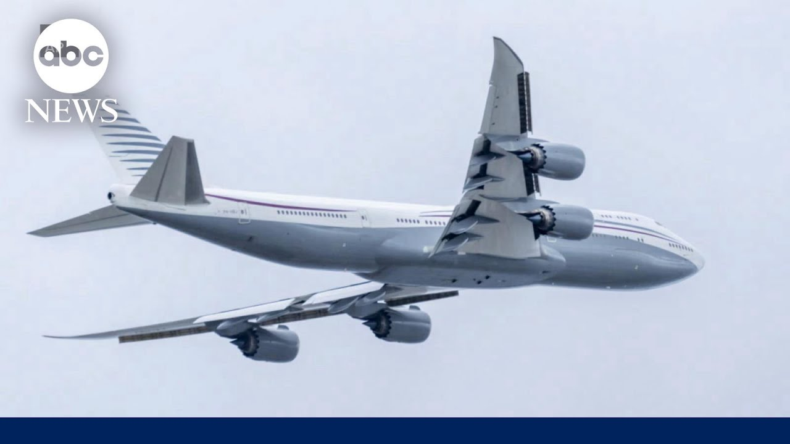

【五角大楼接受卡塔尔豪华客机用作空军一号】
Summary: The Pentagon has accepted a Boeing 747 from Qatar to serve as Air Force One while new presidential planes are being built, amid ethical and security concerns.
摘要： 五角大楼接受了卡塔尔的一架波音747用作空军一号，同时新的总统专机正在建造中，此举引发了道德和安全方面的担忧。

⏱️ Estimated Reading Time: 2 min
The controversy surrounding the Qatari 747 plane to become air air force one.
围绕卡塔尔747飞机成为空军一号的争议。
You know that is part of the story as well here and there it is and we now have news on that.
你知道这也是故事的一部分，现在我们有了相关消息。
What what can you tell us?
你能告诉我们什么？
We do have news on it and also there was a moment where a reporter asked the president in the Oval Office about the acceptance of that plane from cuttery and the president disparaged the reporter saying that this meeting was not about that at all.
我们确实有相关消息，还有一次，一名记者在椭圆形办公室向总统询问接受卡塔尔飞机的事，总统贬低记者，称这次会议与此无关。
And I want to read to you the statement that we received from the Department of Defense.
我想向你们宣读我们从国防部收到的声明。
This was coming through just moments ago.
这是刚刚传来的。
Sean Parnell was he was confirming to ABC that the Pentagon has accepted the Boeing 747 from Cutter.
肖恩·帕内尔向ABC证实，五角大楼已经接受了卡塔尔的波音747。
That was that his plan to serve as an Air Force One while Boeing continues to build two brand new versions of the presidential plane.
这是他的计划，即在波音继续建造两架全新的总统专机期间，将其用作空军一号。
And this is a statement, Terry.
这是一份声明，特里。
Quote, "The Secretary of Defense has accepted a Boeing 747 fromQatar in accordance with all federal rules and regulations.
引述：“国防部长已根据所有联邦法规接受了卡塔尔的一架波音747。
The Department of Defense will work to ensure proper security measures and functional mission requirements are considered for an aircraft used to transport the president of the United States.
国防部将努力确保为用于运输美国总统的飞机考虑适当的安全措施和功能任务要求。
For additional information, we refer you to the United States Air Force.
如需更多信息，请咨询美国空军。”
Now, of course, this has come with an enormous amount of scrutiny and questions concerning the ethical, legal, and security concerns about accepting this plane.
当然，此举引发了大量关于接受这架飞机的道德、法律和安全问题的审查和质疑。
Experts say that it could take an extremely large amount of money and a long time in order for this plane to be ready to serve as Air Force
专家表示，这架飞机可能需要巨额资金和很长时间才能准备好作为空军一号使用。